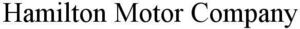

Trade Mark Journal No.2025/021 23 May 2025
WO0000001848016 (7,9,11,12,35,37)
Office of origin: United States of America
Date of International Registration:4 March 2025
Date of designation in the UK:
4 March 2025

International priority date claimed: 23 February 2025
(United States of America)
(99052790)
- Class 7
- Vehicle engine parts, namely, oil tanks; vehicle engine parts, namely, oil tank plugs and caps; vehicle engine parts, namely, crankcase breathers; vehicle engine parts, namely, oil coolers; vehicle engine parts, namely, push rods; vehicle engine parts, namely, rocker arms; vehicle parts, namely, engine cases; vehicle parts, namely, engine cam protectors; vehicle parts, namely, intake manifolds; vehicle parts, namely, cam covers; vehicle parts, namely, power valve for carburetors; vehicle parts, namely, carburetors; vehicle engine parts, namely, intercoolers; vehicle engine parts, namely, charge air coolers and their component parts.
- Class 9
- Vehicle radios; vehicle engine parts, namely, thermostats; vehicle climate controls; audio equipment for vehicles, namely, stereos, speakers, amplifiers, equalizers, crossovers and speaker housings; vehicle batteries.
- Class 11
- Vehicle lights; air conditioners; air conditioning installations; air conditioning units; air conditioning apparatus.
- Class 12
- Automobiles and structural parts therefor; motor cars.
- Class 35
- Retail services connected with the sale of automobile parts and accessories; on-line wholesale and retail store services connected with the sale of automobile parts and accessories.
- Class 37
- Automobile upfitting services; repair and maintenance of automobiles and their parts; automobile service station services; reconditioning of automobiles; providing information relating to the repair or maintenance of automobiles.
Davis Barrow
Representative: Legal Studio Solicitors, The Tannery, 91 Kirkstall Road Leeds LS3 1HS UNITED KINGDOM